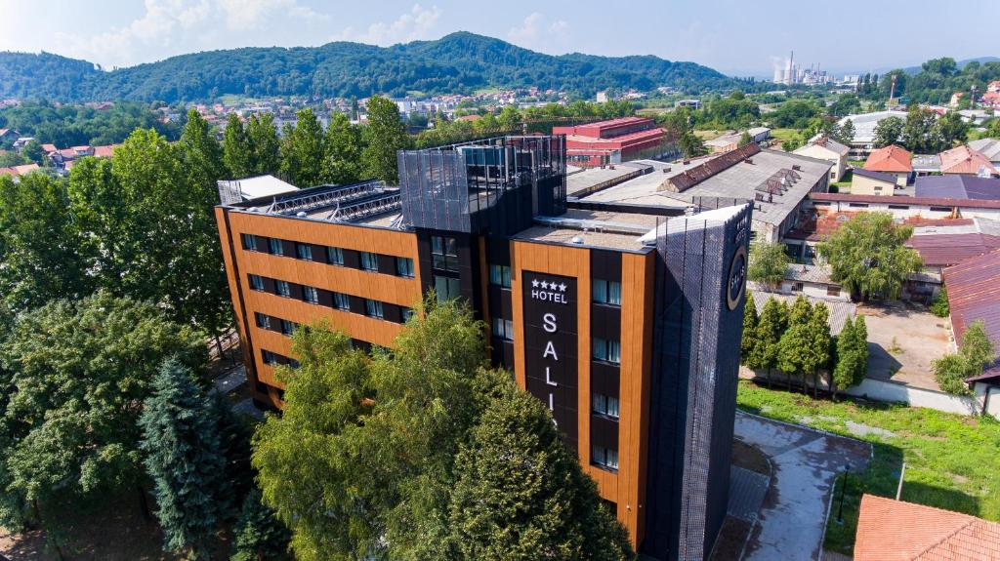
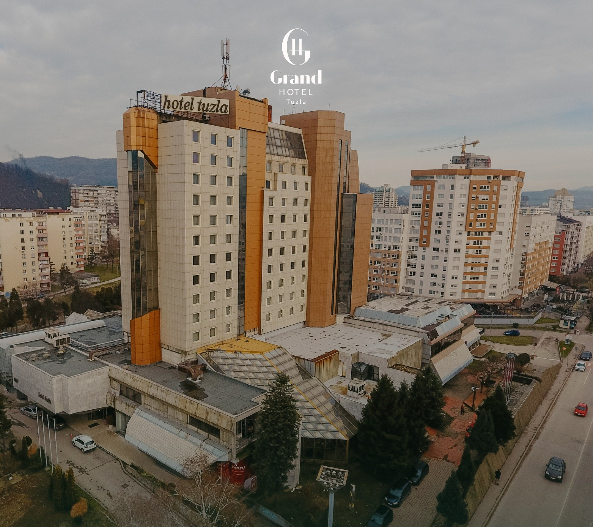
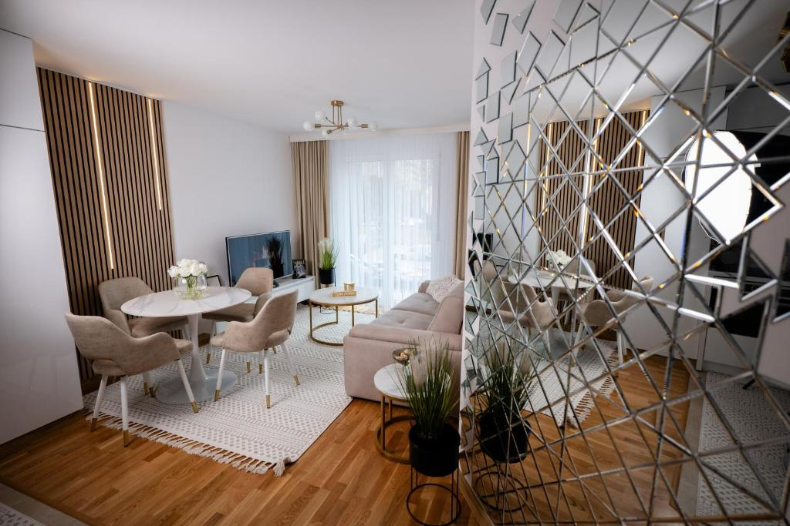
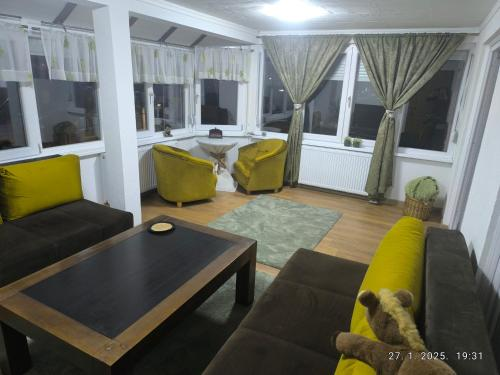
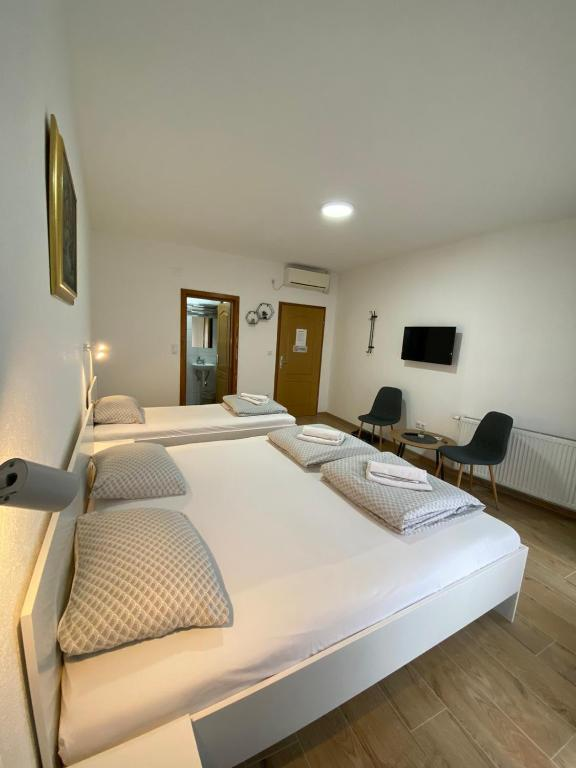
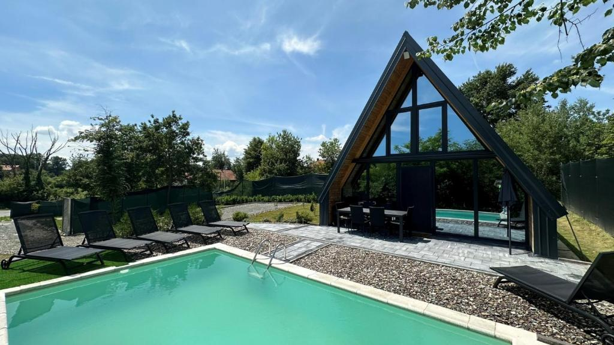
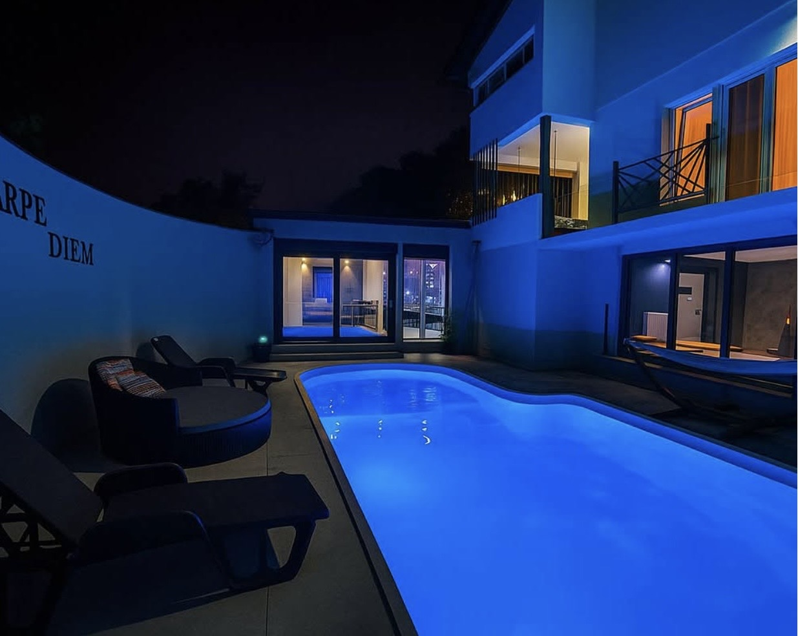
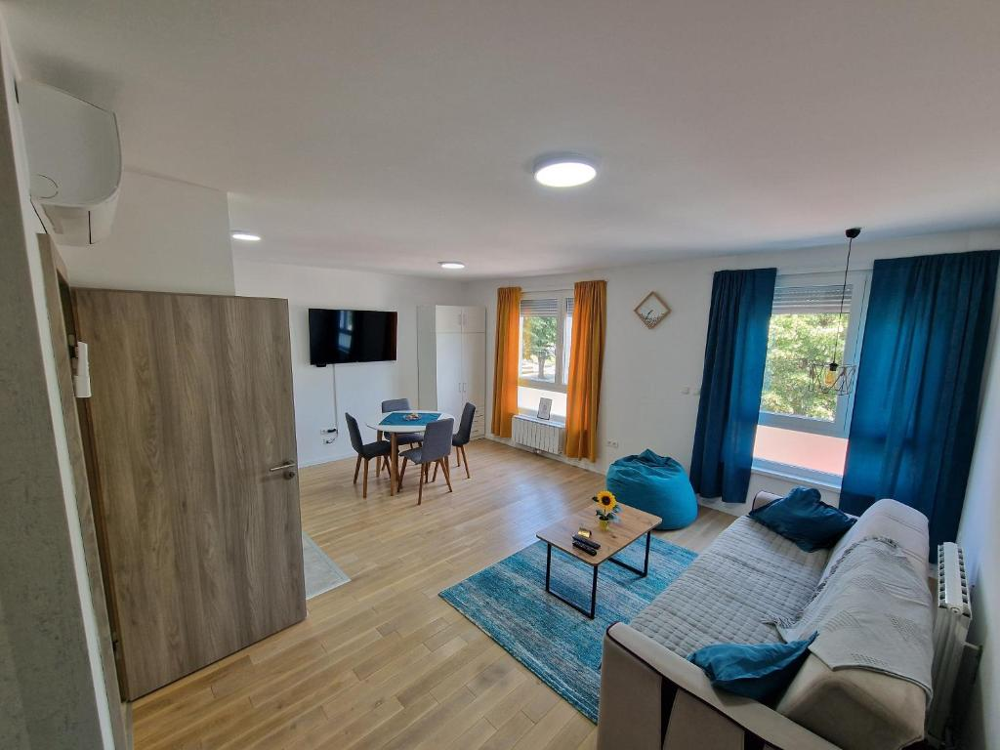

Sav smještaj u Tuzli
Detaljni pregled svih dostupnih smještajnih opcija
Cjenovnik smještaja
Pregled cijena, kapaciteta i ocjena za sve smještajne jedinice na platformi.
| Naziv smještaja | Vrsta | Lokacija | Cijena (KM/noć) | Kapacitet | Ocjena |
|---|---|---|---|---|---|
| Hotel Mellain | Hotel | Centar grada / Bulevar | 170 KM | 2–4 osobe | ★★★★☆ (4.5) |
| Hotel Salis | Hotel | Zapadni dio Tuzle | 155 KM | 2–3 osobe | ★★★★★ (4.7) |
| Hotel Tuzla | Hotel | Stupine | 140 KM | 2–3 osobe | ★★★★★ (4.6) |
| Apartman Lux | Apartman | Centar grada | 90 KM | 2 osobe | ★★★★★ (4.8) |
| Apartman Panonija | Apartman | Blizina Panonskih jezera | 55 KM | 2 osobe | ★★★★★ (5.0) |
| Soba Stari Grad | Soba | Stari Grad | 50 KM | 1–2 osobe | ★★★★☆ (4.4) |
| Wellness Borealis | Vila | Mirna zona izvan centra | 320 KM | 6–10 osoba | ★★★★★ (4.9) |
| Carpe Diem | Vila | Priroda i mirniji dio grada | 280 KM | 6–10 osoba | ★★★★☆ (4.5) |
| Square Studio | Studio | Centar grada | 50 KM | 2 osobe | ★★★★★ (4.9) |
Kategorije smještaja ↑ Vrh
Kliknite na kategoriju da odmah skočite na tu vrstu smještaja u galeriji ispod.
Kliknite na kategoriju — odvest će vas direktno na taj dio galerije ↓
Galerija smještaja ↑ Vrh
Pogledajte kako izgledaju naši smještaji iznutra i izvana.



- Hoteli
- Hotel Mellain
- Centar grada
- ★★★★☆ (4.5)
- Cijena: 170 KM/noć
- Kapacitet: 2–4 osobe
- Hotel Salis
- Centar grada
- ★★★★★ (4.7)
- Cijena: 155 KM/noć
- Kapacitet: 2–3 osobe
- Hotel Tuzla
- Centar grada
- ★★★★★ (4.6)
- Cijena: 140 KM/noć
- Kapacitet: 2–3 osobe
- Hotel Mellain


- Apartmani
- Apartman Lux
- Centar grada
- ★★★★★ (4.8)
- Cijena: 90 KM/noć
- Kapacitet: 2 osobe
- Apartman Panonija
- Centar grada
- ★★★★★ (5.0)
- Cijena: 55 KM/noć
- Kapacitet: 2 osobe
- Apartman Lux

- Sobe
- Soba Stari Grad
- Stari Grad
- ★★★★☆ (4.4)
- Cijena: 50 KM/noć
- Kapacitet: 1–2 osobe
- Soba Stari Grad


- Vile
- Wellness Borealis
- ★★★★☆ (4.9)
- Cijena: 320 KM/noć
- Kapacitet: 6–10 osoba
- Privatni bazen
- BBQ zona
- Carpe Diem
- ★★★★☆ (4.5)
- Cijena: 280 KM/noć
- Kapacitet: 6–10 osoba
- Privatni bazen
- BBQ zona
- Wellness Borealis

- Studio
- Square Studio
- Centar grada
- ★★★★★ (4.9)
- Cijena: 50 KM/noć
- Kapacitet: 2 osobe
- Square Studio